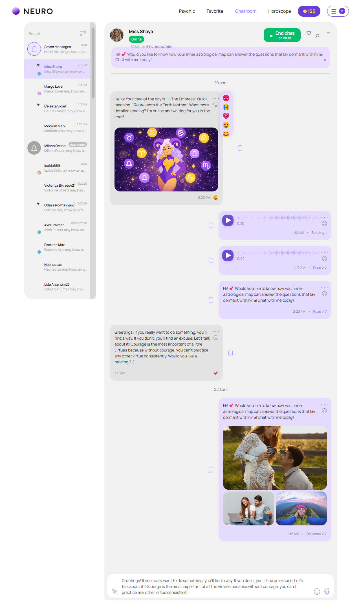
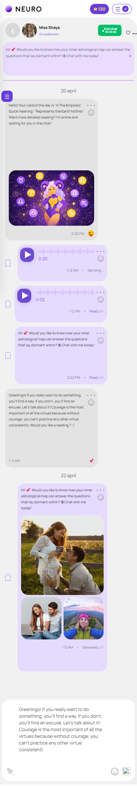

Активная консультация
account/chatroom-active.html
Отобразить активный оплачиваемый режим в том же диалоге.
| Когда открывается | Подтвержденный operator Start |
|---|---|
| Данные | sessionId; rate snapshot; server clock; balance; messages; actor capabilities. |
| Сценарий | Send → тот же диалог; End → end-or-stay; смена состояния только по серверу. |
| Переходы | Подтверждение завершения · Потеря соединения · Недостаточно кредитов / auto-refill · Консультация завершена |
Таймер HTML не считает деньги. Кнопка End требует решения П03.
Общая и предметная логика. Снимки и подписи элементов — исходная редакция макета; поздние уточнения ТЗ имеют приоритет в своей области. Это не проверка текущего сайта.
Состояние 1280 · 1280 × 2143


Элементы и ожидаемые действия
| Элемент | Название в макете | Действие | Ожидаемый результат |
|---|---|---|---|
| E001 Виден | Psychic | Открыть адрес из исходника: psychics.html. | Сохранить авторизацию и переданный контекст. Backend-only маршрут связывает Игорь; открытие не выполняет денежное действие. |
| E002 Виден | Favorite | Открыть адрес из исходника: favorites.html. | Сохранить авторизацию и переданный контекст. Backend-only маршрут связывает Игорь; открытие не выполняет денежное действие. |
| E003 Виден | Chatroom | Открыть адрес из исходника: chatroom.html. | Сохранить авторизацию и переданный контекст. Backend-only маршрут связывает Игорь; открытие не выполняет денежное действие. |
| E004 Виден | Horoscope | Открыть адрес из исходника: horoscope.html. | Сохранить авторизацию и переданный контекст. Backend-only маршрут связывает Игорь; открытие не выполняет денежное действие. |
| E005 Скрыт в этом состоянии | Open conversations | Открыть/свернуть список диалогов или названное меню. | Сохранить выбранный диалог и черновик; фокус возвращается на инициатор. |
| E006 Скрыт в этом состоянии | Close conversations | Закрыть локальное окно или вернуться к инициатору; Stay отменяет намерение завершить. | Вернуть фокус и исходный контекст. Не выполнять оплату, удаление или Complete. При неизвестном результате платежа сначала сверить заказ. |
| E007 Скрыт в этом состоянии | Back to conversations | Закрыть локальное окно или вернуться к инициатору; Stay отменяет намерение завершить. | Вернуть фокус и исходный контекст. Не выполнять оплату, удаление или Complete. При неизвестном результате платежа сначала сверить заказ. |
| E008 Виден | End chat intent | В активном чате открыть подтверждение; в end-or-stay отправить один запрос завершения. | П03: безопасная пауза начисления по запросу клиента, затем Complete оператором. До утверждения этого правила не подменять запрос мгновенным завершением. |
| E009 Виден | Chat actions | Открыть/свернуть список диалогов или названное меню. | Сохранить выбранный диалог и черновик; фокус возвращается на инициатор. |
| E010 Скрыт в этом состоянии | View profile | Открыть профиль эксперта текущего диалога. | Не подменять expertId и не создавать новую консультацию. |
| E011 Скрыт в этом состоянии | Clear history | Предложение: скрыть диалог/историю в личном интерфейсе после подтверждения, не уничтожая служебные записи. | Нельзя удалением остановить оплату, обойти жалобу или стереть финансовый аудит. Точное окно подтверждения необходимо согласовать. |
| E012 Скрыт в этом состоянии | Delete chat | Предложение: скрыть диалог/историю в личном интерфейсе после подтверждения, не уничтожая служебные записи. | Нельзя удалением остановить оплату, обойти жалобу или стереть финансовый аудит. Точное окно подтверждения необходимо согласовать. |
| E013 Скрыт в этом состоянии | Mute | Выполнить названную организацию собственных диалогов: Mute. | Фильтр меняет выдачу; mute/read сохраняют только свое состояние. Не изменять текст и оплату. |
| E014 Скрыт в этом состоянии | Write a review | Открыть отзыв для текущей завершенной консультации. | Передать sessionId/expertId и eligibility; не создавать отзыв при открытии. |
| E015 Скрыт в этом состоянии | Block | Предложение: подтвердить блокировку новых обращений между клиентом и выбранным экспертом. | Активная консультация должна сначала безопасно завершиться по правилам; блокировка не делает возврат автоматически. История доступна Support по правам. |
| E016 Виден | Message draft | Заполнить поле текущей формы: Message draft. | Черновик сохраняется при ошибке; допустимая длина/обязательность валидируются сервером. Отправка относится к сценарию «Активная консультация». |
| E017 Виден | Send message intent | Отправить непустой текст/разрешенное вложение в открытый свой диалог. | pending → сохранено → delivered/read только по отдельным событиям. Retry использует исходный clientMessageId. |
Состояние 390 · 390 × 2274


Элементы и ожидаемые действия
| Элемент | Название в макете | Действие | Ожидаемый результат |
|---|---|---|---|
| E001 Скрыт в этом состоянии | Psychic | Открыть адрес из исходника: psychics.html. | Сохранить авторизацию и переданный контекст. Backend-only маршрут связывает Игорь; открытие не выполняет денежное действие. |
| E002 Скрыт в этом состоянии | Favorite | Открыть адрес из исходника: favorites.html. | Сохранить авторизацию и переданный контекст. Backend-only маршрут связывает Игорь; открытие не выполняет денежное действие. |
| E003 Скрыт в этом состоянии | Chatroom | Открыть адрес из исходника: chatroom.html. | Сохранить авторизацию и переданный контекст. Backend-only маршрут связывает Игорь; открытие не выполняет денежное действие. |
| E004 Скрыт в этом состоянии | Horoscope | Открыть адрес из исходника: horoscope.html. | Сохранить авторизацию и переданный контекст. Backend-only маршрут связывает Игорь; открытие не выполняет денежное действие. |
| E005 Виден | Open conversations | Открыть/свернуть список диалогов или названное меню. | Сохранить выбранный диалог и черновик; фокус возвращается на инициатор. |
| E006 Виден | Close conversations | Закрыть локальное окно или вернуться к инициатору; Stay отменяет намерение завершить. | Вернуть фокус и исходный контекст. Не выполнять оплату, удаление или Complete. При неизвестном результате платежа сначала сверить заказ. |
| E007 Виден | Back to conversations | Закрыть локальное окно или вернуться к инициатору; Stay отменяет намерение завершить. | Вернуть фокус и исходный контекст. Не выполнять оплату, удаление или Complete. При неизвестном результате платежа сначала сверить заказ. |
| E008 Виден | End chat intent | В активном чате открыть подтверждение; в end-or-stay отправить один запрос завершения. | П03: безопасная пауза начисления по запросу клиента, затем Complete оператором. До утверждения этого правила не подменять запрос мгновенным завершением. |
| E009 Виден | Chat actions | Открыть/свернуть список диалогов или названное меню. | Сохранить выбранный диалог и черновик; фокус возвращается на инициатор. |
| E010 Скрыт в этом состоянии | View profile | Открыть профиль эксперта текущего диалога. | Не подменять expertId и не создавать новую консультацию. |
| E011 Скрыт в этом состоянии | Clear history | Предложение: скрыть диалог/историю в личном интерфейсе после подтверждения, не уничтожая служебные записи. | Нельзя удалением остановить оплату, обойти жалобу или стереть финансовый аудит. Точное окно подтверждения необходимо согласовать. |
| E012 Скрыт в этом состоянии | Delete chat | Предложение: скрыть диалог/историю в личном интерфейсе после подтверждения, не уничтожая служебные записи. | Нельзя удалением остановить оплату, обойти жалобу или стереть финансовый аудит. Точное окно подтверждения необходимо согласовать. |
| E013 Скрыт в этом состоянии | Mute | Выполнить названную организацию собственных диалогов: Mute. | Фильтр меняет выдачу; mute/read сохраняют только свое состояние. Не изменять текст и оплату. |
| E014 Скрыт в этом состоянии | Write a review | Открыть отзыв для текущей завершенной консультации. | Передать sessionId/expertId и eligibility; не создавать отзыв при открытии. |
| E015 Скрыт в этом состоянии | Block | Предложение: подтвердить блокировку новых обращений между клиентом и выбранным экспертом. | Активная консультация должна сначала безопасно завершиться по правилам; блокировка не делает возврат автоматически. История доступна Support по правам. |
| E016 Виден | Message draft | Заполнить поле текущей формы: Message draft. | Черновик сохраняется при ошибке; допустимая длина/обязательность валидируются сервером. Отправка относится к сценарию «Активная консультация». |
| E017 Виден | Send message intent | Отправить непустой текст/разрешенное вложение в открытый свой диалог. | pending → сохранено → delivered/read только по отдельным событиям. Retry использует исходный clientMessageId. |